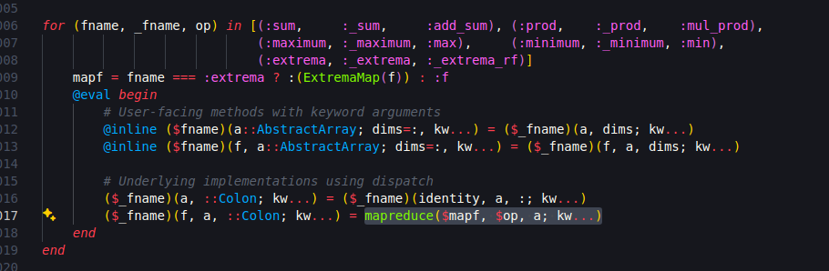
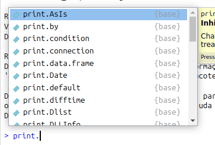

@edit maximum([1:5;])Julia for R users
I know a lot of R and can do my daily job with it. Why should I learn Julia?
In my case, I was looking for some adventure. Haskell seemed too hard, Python too normal. So I went on a journey to learn Julia and was very happy with what I discovered.
Below is a (biased) list of advantages of Julia compared to R:
Fast Julia code is written in Julia; fast R code is not written in R
In R, whenever you need some really fast code (as fast as you would get in C), you have to use C or Fortran code. R is simply slow. If you need speed in R, you will have to find a package that already implements what you need or learn C/Fortran, use RCpp and pray.

stringi package sourcecode.In Julia, you won’t need other language to get speed close to C. That’s way they say that Julia solves the two language problem. Julia packages are almost always 100% Julia, which means that you can look to its sourcecode and learn a lot.

This is specially interesting if you read Julia Base sourcecode! How does Julia define the maximum of a vector? Type
and you will see this:

It takes some time to grasp the meaning, but in the end it says “apply a mapreduce into the vector, using the max function on each pair of numbers”. In R, the sourcecode is a sad .Primitive("max").
No need to vectorize code; loops, maps and broadcast are fast enough
Julia has a special notation . (yes, a dot) to apply any function to a vector/array/iterable-object; this is called broadcasting. For example, you can apply the power2 function in a vector as easy as
#julia
# define power2 for numbers
power2(x) = x^2;
# apply in vectors
power2.(1:10)10-element Vector{Int64}:
1
4
9
16
25
36
49
64
81
100or in a matrix
#julia
X = reshape([1:16;], (4, 4))4×4 Matrix{Int64}:
1 5 9 13
2 6 10 14
3 7 11 15
4 8 12 16#julia
power2.(X)4×4 Matrix{Int64}:
1 25 81 169
4 36 100 196
9 49 121 225
16 64 144 256When using infix functions like + or =, you put the dot before the operator, as in
#julia
[1:5;] .+ 105-element Vector{Int64}:
11
12
13
14
15In R, you always try to avoid loops because they are slow. Suppose you have a vector and want to sum 1 to every entry. As an experienced R programmer, you look for a vectorized approach:
#| eval: false
# R
f1_vec = function(x) {
y = x + 1
}instead of a loop
#| eval: false
# R
f1_loop = function(x) {
y = x
for (i in seq_along(x)) y[i] = x[i] + 1
y
}or a even a purrr::map approach
#| eval: false
#R
f1_map = function(x) {
purrr::map_dbl(x, \(xi) xi + 1)
}because the first options is faster. We can see the difference:
#| eval: false
# R
x = 1:100000
bench::mark(
f1_vec(x)
,f1_loop(x)
,f1_map(x)
,relative = TRUE
)#R
R"""
f1_vec = function(x) {
y = x + 1
}
f1_loop = function(x) {
y = x
for (i in seq_along(x)) y[i] = x[i] + 1
y
}
f1_map = function(x) {
purrr::map_dbl(x, \(xi) xi + 1)
}
x = 1:100000
bench::mark(
f1_vec(x)
,f1_loop(x)
,f1_map(x)
,relative = TRUE
)
"""┌ Warning: RCall.jl: Aviso: Some expressions had a GC in every iteration; so filtering is disabled.
└ @ RCall ~/.julia/packages/RCall/0ggIQ/src/io.jl:172RObject{VecSxp}
# A tibble: 3 × 13
expression min median `itr/sec` mem_alloc `gc/sec` n_itr n_gc total_time
<bch:expr> <dbl> <dbl> <dbl> <dbl> <dbl> <int> <dbl> <bch:tm>
1 f1_vec(x) 1 1 124. 1 11.1 828 11 500ms
2 f1_loop(x) 44.6 13.6 10.6 1.03 1 72 1 506ms
3 f1_map(x) 542. 147. 1 1.01 33.8 7 35 523ms
# ℹ 4 more variables: result <list>, memory <list>, time <list>, gc <list>In my machine, the loop is ~40x slower and the map ~500x slower than the vectorized version.
In Julia, the three approachs are similar:
#julia
f1_vec(x) = x .+ 1;
function f1_loop(x)
y = similar(x)
@inbounds for i ∈ eachindex(x) y[i] = x[i] + 1 end
y
end;
function f1_map(x)
map(x) do xi
xi + 1
end
end;#julia
using BenchmarkTools;
x = [1:100000;];
@benchmark f1_vec($x)#julia
@benchmark f1_loop($x)#julia
@benchmark f1_map($x)This means that in Julia it is usual to define a function using a scalar type (a Number like Float64/Int or a String) and then use broadcast to apply the function to vectors/matrices/etc.
The compiler is your friend
Multiple dispatch and a rich type system
A type system is a way to create a hierarchy of data ……….?
Consider de print function in R. It is a generic function, which means that its behaviour depends on the class of its first argument. This can be seen when we look to its misterious source code:

print function sourcecode.which means that print will use several methods, one for each class. Actually, R just creates a different function for each class, with the pattern function.class:

print.In Julia, every function is generic. This means that we can use the same function name and define different behaviours/implementations for each combination of classes/types of its arguments.
Macros rewrite code without typing
Multithreading is trivial
Modules and packages are a joy to use
In R, you have 2 options to call a function from another package:
- use
library(PACKAGE)and then import every function from PACKAGE to your namespace; - use
PACKAGE::FUNCTIONevery time you want to use a function.
In Julia, you have more options:
- a
- b
- c
There is also the possibility to create modules inside modules (which are like packages inside packages). For example, if you have a package to train machine learning modules, you can have a module about Metrics, another one with Models and so on. Importing then can be done with
using MyPackage.Metrics
# or
import MyPackage.Models as MD